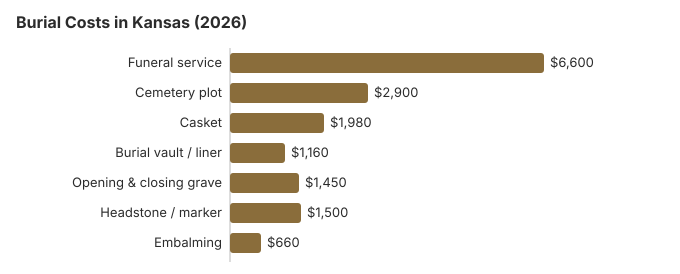

Burial Costs in Kansas (2026)
For Kansas families choosing burial in 2026, the honest pricing conversation starts with three numbers: the $6,600 funeral service average, the $2,900 cemetery plot average, and the $500-$5,000 headstone range. Add vault, opening-and-closing, casket and a headstone and the complete Kansas picture runs $14,590 to $19,090.
What Each Part of a Kansas Burial Costs
| Item | Average Cost | Range |
|---|---|---|
| Funeral service | $6,600 | $4,950 – $8,580 |
| Cemetery plot | $2,900 | $1,450 – $5,800 |
| Casket | $1,980 | $660 – $5,280 |
| Burial vault / liner | $1,160 | $800 – $10,000 |
| Opening & closing grave | $1,450 | $500 – $3,000 |
| Headstone / marker | $1,500 | $500 – $5,000+ |
| Embalming | $660 | $500 – $1,500 |
Methodology note: These figures are our estimates, not a survey of local providers, and they are not a quote or professional advice. See how we calculate them or read the full disclaimer.

Standard burial expenses include fees from both the funeral home and cemetery. The National Funeral Directors Association reports a national median cost of $8,300, while its median for a funeral with viewing and cremation is $6,280. Add a burial vault and the NFDA median rises to $9,995, and cemetery charges such as the plot, opening and closing, and a marker come on top of that. Embalming has an NFDA 2023 median of $845 and is often unnecessary unless a viewing or timing issue makes body preparation helpful.
The total cost of burial in Kansas, including all cemetery fees, typically ranges from $14,590 to $19,090 depending on choices made.
How to Save Money and Reduce Burial Costs in Kansas
Burial costs in Kansas can be managed with smart planning:
- Compare cemetery prices directly: Cemeteries are not covered by the FTC Funeral Rule but most in Kansas will share a price sheet on request.
- Call the township or county clerk: Kansas has many township, county, and fraternal cemeteries that simply do not appear in Google results.
- Work with independent funeral homes: Kansas still has a strong independent, family-owned funeral home market, and these funeral providers generally price closer to the NFDA national averages than corporate-chain locations.
- Direct burial is widely accepted: Cultural openness to direct burial (no viewing, no ceremony, immediate interment) is stronger in Kansas than on the coasts.
- The federal trade commission created the Funeral Rule in 1984, and it requires clear disclosure of costs plus an itemized statement of charges from funeral homes. The NFDA 2023 median for a metal casket is $2,500, and premium metal models can cost several times that. Choosing less expensive materials can also help families save money on burial merchandise.
Burial Practices Around Kansas
Midwestern funeral pricing in Kansas is generally transparent: independent family-owned funeral homes still dominate here more than in the coasts, and they tend to be more willing to itemize and negotiate, especially if you follow a structured approach like our step-by-step guide to comparing funeral prices. Geographic location influences both funeral expenses and cemetery charges, even within Kansas, so a GPL walkthrough on the phone with two or three Kansas providers is usually enough to see where the price points sit, identify the package markups, and ask how cemetery fees and burial plots differ by area.
Corporate cemeteries usually charge higher fees than municipal or non-profit cemeteries, which is one reason to compare providers.
Funeral costs also vary within Kansas. Our statewide estimate puts the funeral service at about $6,600, below NFDA’s $8,300 national median for a funeral with viewing and burial, but a funeral home in Johnson County or Wichita may quote more than one in a small western Kansas town. Our Kansas funeral cost guide breaks out the same service by type.
Burial and Direct Cremation Resources
- Funeral Consumers AllianceNonprofit consumer advocacy for funeral pricing
- Headstone & Monument GuideCosts, types, and buying tips
- Green Burial OptionsEco-friendly and natural alternatives
- Best Online Casket RetailersCaskets bought online often cost less
- Best Burial InsuranceCompare plans to cover burial expenses
If burial still feels out of reach, compare it with cremation in Kansas, where direct cremation is estimated at about $1,500.
Compare Funeral Costs
- Average Funeral Cost in 2026National cost breakdown with real prices
- Cremation vs. Burial Cost ComparisonSide-by-side price comparison to help you decide
- Ohio cremation costs in 2026Detailed look at direct and full-service cremation pricing
- Funeral Cost BreakdownEvery line item explained: know what you're paying for
- Cheapest Funeral OptionsLower-cost alternatives, with typical price ranges
- Oklahoma cremation costs in 2026Regional overview of low-cost cremation choices
- Direct Cremation: Most Affordable OptionNFDA 2023 median $2,645 with a family-supplied container (latest available)
- Step-by-step guide to getting the best priceHow to compare funeral prices and negotiate
Burial Options and Average Funeral Cost in Kansas
- Traditional burial: A traditional funeral with viewing, body preparation, and the funeral ceremony before cemetery burial. This higher-cost, full service burial has a national median of $8,300 (NFDA 2023), or $9,995 with a vault, before local cemetery choices push totals higher.
- Direct burial: Also called immediate burial, this low-service option means the body is buried shortly after death without embalming, viewing, or ceremony. It typically costs about $1,500 to $4,000.
- Learn about green burial
For comparison, direct cremation has an NFDA 2023 median of $2,645 with a family-supplied container, while a funeral with viewing and cremation has an NFDA 2023 median of $6,280; families who want to estimate and compare these choices across locations can use our funeral cost calculator for cremation, burial, and services.
Cremation costs are often thousands lower than burial and can save families about $6,390 on average while avoiding future expenses like cemetery maintenance fees. More than half of consumers are expected to choose cremation by 2045.
Frequently Asked Questions
How much does burial cost in Kansas?
A traditional burial in Kansas costs approximately $6,600 for the funeral service plus $2,900 for a cemetery plot. When you add a burial vault ($1,160), opening and closing fees ($1,450), casket ($1,980), and headstone ($500-$5,000), the Kansas total typically ranges from $14,590 to $19,090.
Are burial vaults mandatory in Kansas?
No Kansas statute requires a vault or liner. Each Kansas cemetery sets its own rule, so ask the sexton or cemetery board for it in writing before assuming you need one, and ask whether a liner counts.
Kansas regulates cemetery money rather than cemetery merchandise. Cemetery corporations register with the Kansas Secretary of State, keep a permanent maintenance fund (K.S.A. 17-1312) and file quarterly sales reports (K.S.A. 17-1312a). If a Kansas funeral home tells you state law requires a vault, that claim is barred by the FTC Funeral Rule (16 CFR 453.3(c)).
How can I reduce burial costs in Kansas?
In addition, many families use funeral planning to plan ahead through prepaid funeral plans or pre-need arrangements that lock in current prices and reduce final expenses. These plans are usually tied to a specific funeral home or company and can lower stress for relatives later.
How do I compare cemetery costs in Kansas?
Cemetery costs in Kansas vary significantly even within the same city, and for families planning a service without life insurance or burial insurance this variation can feel overwhelming, making it especially important to understand funeral costs when uninsured. Ask for the funeral home service fee or basic services fee separately so no service fee is mixed into burial plots or other cemetery charges. The death certificate and other funeral arrangements paperwork can also create small administrative charges that should appear on the itemized bill. In particular, township, county, and fraternal cemeteries in Kansas are often only listed through the county clerk and frequently price plots well below commercial memorial parks.
What is an all-in burial estimate for Kansas?
Adding every line item, burial in Kansas usually totals $14,590 to $19,090: funeral service about $6,600, plot about $2,900, casket about $1,980, vault about $1,160, opening-and-closing about $1,450, and headstone $500-$5,000. Veterans may qualify for burial benefits, including burial in a VA national cemetery or another national cemetery with a free gravesite and headstone. In some cases, veterans can also receive up to $2,000 for burial expenses. Social Security may pay a one-time $255 benefit to an eligible surviving spouse after the person died. FEMA funeral assistance may apply for disaster-related deaths. State programs, local departments, and local charities may offer financial assistance to cover funeral costs, including cremation or burial aid for low-income families.
Can I choose a natural or green burial in Kansas?
Green burial sections, which take a biodegradable container and skip embalming and the vault, are spreading across Kansas cemeteries and usually total less than a conventional burial; where no such ground is close, some Kansas families pick a hybrid, a regular plot with no embalming. Part of any lot price is earmarked by statute. K.S.A. 17-1301c defines the share a cemetery corporation must put into its permanent maintenance fund as 15% of a burial lot's purchase price with a $25 floor, 10% (at least $100) of a community mausoleum crypt and 5% (at least $50) of a garden mausoleum crypt or niche.
More for Kansas
Burial rules and help in Kansas
The Kansas State Board of Mortuary Arts (785-296-3980) licenses the funeral homes that arrange burials in Kansas. It can also tell you which Kansas office handles cemetery complaints.
Kansas does not require a funeral director for a burial, by the Funeral Consumers Alliance's count of the nine states that do, so the family can work with a Kansas cemetery directly on the plot, the grave opening and the container it accepts.
A Kansas burial needs a disposition permit. If you switch to cremation instead, there is no fixed waiting period, though a permit is required (K.S.A. 65-1762; 65-2426a).
When nobody claims a body in Kansas, the coroner arranges the burial and the county general fund pays whatever the person's property and the state assistance program do not (K.S.A. 22a-215). (Source: K.S.A. 22a-215; K.S.A. 39-713d.) Social Security's $255 payment to a surviving spouse or child is well short of the $2,900 Kansas plot estimate on this page.
Eligible Kansas veterans get a grave, opening and closing, a liner and a headstone at no cost in a national cemetery. In Kansas, VA national cemeteries accepting burials: Fort Leavenworth National Cemetery (913-684-4348, cremated remains only); Fort Scott National Cemetery (913-212-4612); Leavenworth National Cemetery (913-727-1376); state veterans cemeteries: Kansas Veterans Cemetery at Fort Dodge (620-682-7564); Kansas Veterans Cemetery at Fort Riley / Manhattan (785-717-3050); Kansas Veterans Cemetery at WaKeeney (785-743-5685); Kansas Veterans Cemetery at Winfield (620-705-6300) (source: VA National Cemetery Administration).
Next steps for a burial in Kansas
- Price the Kansas cemetery separately: plot, opening and closing, vault or liner, and marker are often sold apart from the funeral home.
- Ask the Kansas cemetery for its rules on grave opening times, vaults and markers.
- Call the Kansas county coroner about a county-paid burial before purchasing a plot.
- For a veteran, ask Leavenworth National Cemetery about eligibility before buying a private plot.
- A complaint call to 785-296-3980 is free if a funeral home misleads you about burial costs.